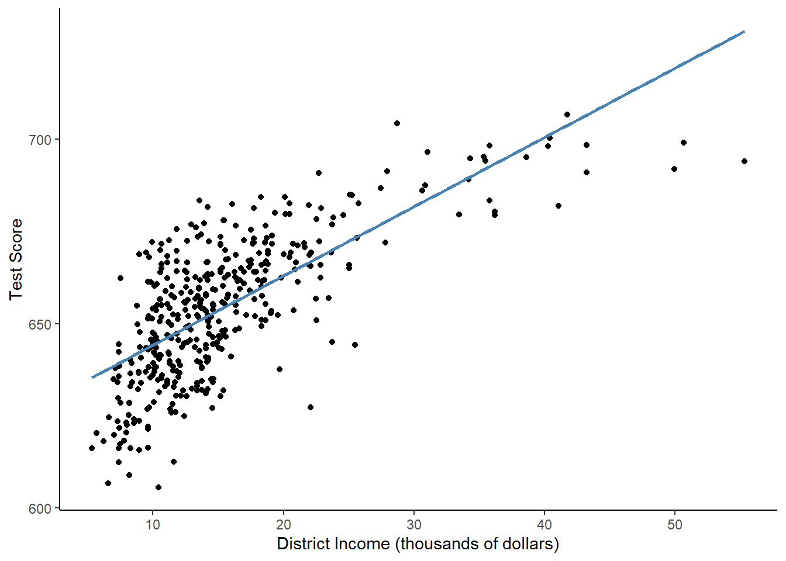
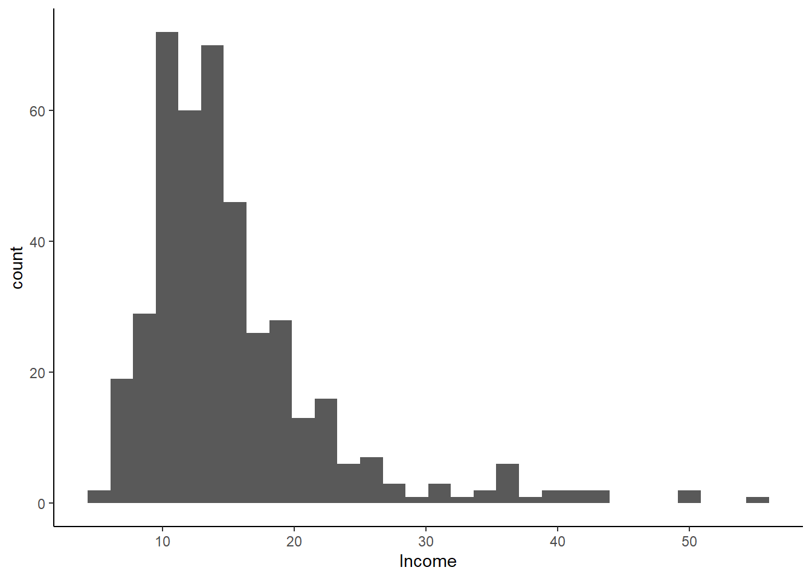
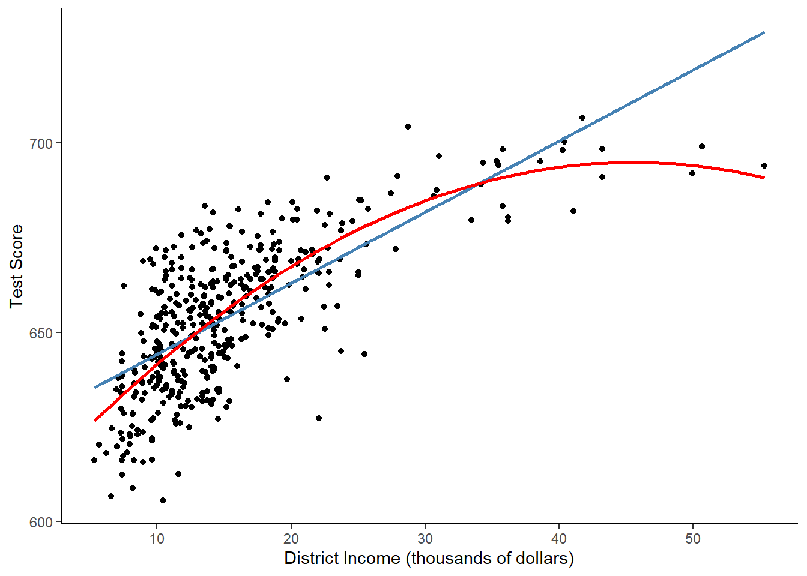
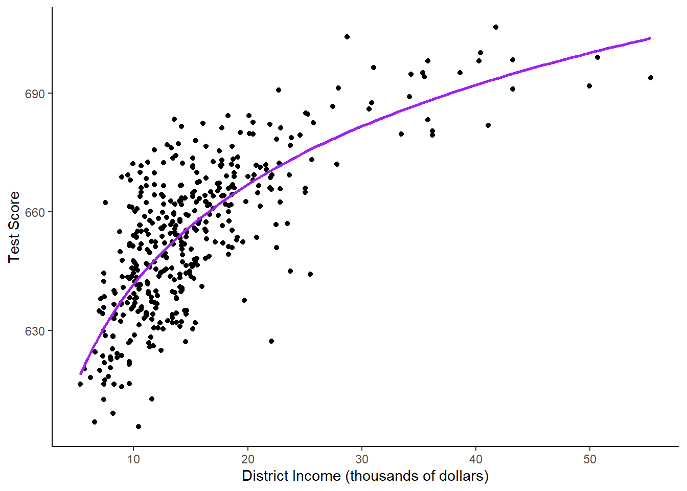
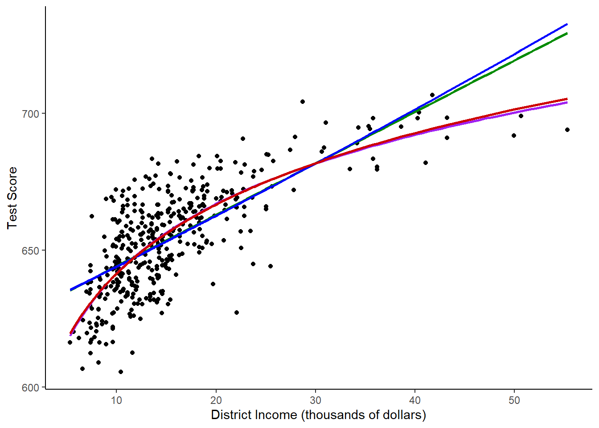
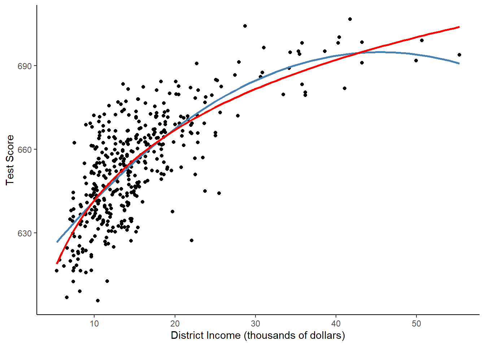

rm(list=ls()) # Clears the R environment
# Read in libraries and data
library(ggplot2)
library(AER)
data(CASchools)
# Calculate the number of students per teacher
CASchools$size <- CASchools$students/CASchools$teachers
# Calculate the average of math and reading score
CASchools$score <- (CASchools$read + CASchools$math) / 2Lab 9: Transformations and Interactions
Outline
Objectives
Perform and interpret a polynomial regression
Log transform a variable, incorporate it into a regression, and interpret it
Utilize and interpret interaction terms in regression
Data
We will load the CASchools dataset from an R package. This dataset includes data about 420 schools in California in 1996-1998. This website has information about each of the variables.
Packages
AER: has the data we will use in the labggplot2: used for graphing
Grade
At the end of the demonstration, there is an assignment for you to do with different data. You will answer associated questions on Canvas.
Step 1: Load in the data
To do the lab, we will load in the data from the AER package. We also need to calculate the average class size, and create a score that is the average of the reading and math score for the school. This score will be our primary outcome.
Step 2: Income and School Quality Analysis - Polynomials
Linear Regression
The first thing we are going to explore with the data is how the average income in the district is related to the reading and math score. What do you think the relationship between income and test scores would be?
We can first test this with a simple correlation: cor(CASchools$score, CASchools$income). There is a positive relationship! But let’s run a regression and plot the points to be more thorough.
# fit a simple linear model
linear_model <- lm(score ~ income, data = CASchools)
summary(linear_model)
Call:
lm(formula = score ~ income, data = CASchools)
Residuals:
Min 1Q Median 3Q Max
-39.574 -8.803 0.603 9.032 32.530
Coefficients:
Estimate Std. Error t value Pr(>|t|)
(Intercept) 625.3836 1.5324 408.11 <2e-16 ***
income 1.8785 0.0905 20.76 <2e-16 ***
---
Signif. codes: 0 '***' 0.001 '**' 0.01 '*' 0.05 '.' 0.1 ' ' 1
Residual standard error: 13.39 on 418 degrees of freedom
Multiple R-squared: 0.5076, Adjusted R-squared: 0.5064
F-statistic: 430.8 on 1 and 418 DF, p-value: < 2.2e-16Great! If the average income in a district is $1,000 higher, the expected score is 1.88 higher. Income ranges from 5,000 to 55,000, and the scores range from 605 to 707, so that is a pretty big effect! Going from the 1st quartile ($10,639) to the 3rd quartile ($17,629) would increase the score by two thirds of a standard deviation.
Now, let’s plot the data to see what it looks like.
# plot the observations
ggplot(CASchools, aes(x = income, y = score)) +
geom_point() +
xlab("District Income (thousands of dollars)") +
ylab("Test Score") +
geom_smooth(method = 'lm', formula = y~x, se = F, color = "steelblue") +
theme_classic()
In a linear regression, X and Y are supposed to be linearly related. That means that the effect that X has on Y should be the same at every value of X. However, in this example, it is clearly not the case! The points look curved, but the linear regression line is, well, linear. The regression predicts too high of test scores for low- and high-income districts, but too low of test scores for middle income districts.
Income tends to be strongly right skewed, meaning that most of the observations are grouped around the median, but there are some very high values that make the mean high.
Let’s plot a histogram of income to see if this income variable is right skewed.
ggplot(CASchools, aes(x = income)) +
geom_histogram() +
xlab("Income") +
theme_classic()
The data is right skewed, so we probably need to correct for that. We can try a few different specifications that will fit the data better.
Quadratic Regression
We can model test scores as a function of income and income squared. The corresponding regression model is:
\[ TestScore_i = \beta_0 + \beta_1income_i + \beta_2income_i^2 + \varepsilon_i \] This is called a quadratic regression model. \(income^2\) is treated as an additional explanatory variable. Note that since \(income^2\) is not a linear transformation of \(income\), it does not create perfect multicollinearity.
If the relationship between test scores and district income is linear, then the coefficient on \(income^2\) will not be significantly different from 0. If the relationship is quadratic, then the relationship will be significantly different from zero. This corresponds to the hypothesis test:
\[ H_0: \beta_2 = 0 \] \[H_A: \beta_2 \neq 0 \]
The p-value we use to test this hypothesis is in the last column of the summary table.
We will use the poly(x, k) function, which will turn whatever x variable we input into a kth order polynomial.
Call:
lm(formula = score ~ poly(income, 2), data = CASchools)
Residuals:
Min 1Q Median 3Q Max
-44.416 -9.048 0.440 8.347 31.639
Coefficients:
Estimate Std. Error t value Pr(>|t|)
(Intercept) 654.1565 0.6209 1053.633 < 2e-16 ***
poly(income, 2)1 277.8568 12.7238 21.838 < 2e-16 ***
poly(income, 2)2 -85.9935 12.7238 -6.758 4.71e-11 ***
---
Signif. codes: 0 '***' 0.001 '**' 0.01 '*' 0.05 '.' 0.1 ' ' 1
Residual standard error: 12.72 on 417 degrees of freedom
Multiple R-squared: 0.5562, Adjusted R-squared: 0.554
F-statistic: 261.3 on 2 and 417 DF, p-value: < 2.2e-16The regression equation is: \[\hat{TestScore}_i = 654.2 +277.9*income-85.99*income^2\]
We now draw the same scatter plot as for the linear model and add the regression line for the quadratic model.
ggplot(CASchools, aes(x = income, y = score)) +
geom_point() +
xlab("District Income (thousands of dollars)") +
ylab("Test Score") +
geom_smooth(method = 'lm', formula = y~x, se = F, color = "steelblue") +
geom_smooth(method = 'lm', formula = y ~ poly(x, 2), se = F, color = "red") +
theme_classic()
The quadratic function clearly fits the data much better than the linear model.
Polynomial Regression
We could generalize the quadratic model to include any number of polynomial degrees. \[ \hat{Y}_i = \beta_0 + \beta_1X_i + \beta_2X_i^2 + \beta_3X_i^3 + ... + \beta_kX_i^k \] A cubic model, for instance, is a polynomial model with the square and cube of the variable, so k = 3.
# estimate a cubic model
cubic_model <- lm(score ~ poly(income, 3), data = CASchools)
summary(cubic_model)
Call:
lm(formula = score ~ poly(income, 3), data = CASchools)
Residuals:
Min 1Q Median 3Q Max
-44.28 -9.21 0.20 8.32 31.16
Coefficients:
Estimate Std. Error t value Pr(>|t|)
(Intercept) 654.16 0.62 1055.034 < 2e-16 ***
poly(income, 3)1 277.86 12.71 21.867 < 2e-16 ***
poly(income, 3)2 -85.99 12.71 -6.767 4.47e-11 ***
poly(income, 3)3 18.46 12.71 1.452 0.147
---
Signif. codes: 0 '***' 0.001 '**' 0.01 '*' 0.05 '.' 0.1 ' ' 1
Residual standard error: 12.71 on 416 degrees of freedom
Multiple R-squared: 0.5584, Adjusted R-squared: 0.5552
F-statistic: 175.4 on 3 and 416 DF, p-value: < 2.2e-16One problem with including an extra polynomial is that, as we add additional dimensions, the model becomes harder and harder to interpret. Additionally, we only want to include predictors that make our model better. What happened to the \(Adjusted R^2\) between the quadratic regression and the cubic regression? Is the cubic term significant?
See if you can add the line from the cubic equation to your scatterplot.
Interpreting Polynomial Models
Polynomials are difficult to interpret. One method for interpreting polynomials is to take the derivative of the equation. For instance, the cubic model has the following regression equation: \[ score_i = 654 + 278*income_i -86*income_i^2 +19*income_i^3 +\varepsilon_i \]
The derivative of the equation with respect to income would be: \[ \frac{\partial{score_i}}{\partial{income_i}} = 278-86*2*income_i+19*3*income_i^2\] \[=278-172*income_i+57*income_i^2 \]
We would get the following interpretation: “A one-unit increase in income would lead to a \(278-172income_i+57income_i^2\) increase in expected test score.” Confusing!
Alternatively, you can just show a graph of the relationship and predict the effects at a few different values. Let’s predict what happens with the quadratic model when we change income at a few different levels. First, we will test what happens when income goes from 10,000 to 11,000. (Remember that in the data, income is in 1,000s.)
# set up data for prediction
new_data <- data.frame(income = c(10, 11))
# do the prediction
Y_hat <- predict(quadratic_model, newdata = new_data)
# compute the difference
diff(Y_hat) 2
2.962517 How does that compare to the change if income goes from 40 to 41?
Step 3: Income and School Quality Analysis - Logarithms
Another way to specify a nonlinear regression function is to use the natural logarithm of X and/or Y. Logarithms convert changes in variables into percentage changes. This is convenient as many relationships are naturally expressed in terms of percentages. Often, if you are using a right-skewed variable like income, you should automatically take the logarithm.
There are three different kinds of models with log transformations:
Level-Log: Transform X to be log(X), but do not transform Y (use Y’s level).
Log-Level: Transform Y to be log(Y), but do not transform X (use X’s level).
Log-Log: Transform X and Y so that log(Y) ~ log(X).
The interpretation of the regression coefficients is different in each case. This table shows the interpretation by case:
| Case | Equation | Interpretation of \(\beta_1\) |
|---|---|---|
| Level-Log | \[ \hat{Y}_i=\beta_0+\beta_1ln(X_i) \] | A 1% change in X is associated with a \(0.01*\beta_1\) change in Y. |
| Log-Level | \[ ln(\hat{Y_i})=\beta_0+\beta_1X_i \] | A 1 unit change in X is associated with a \(100*\beta_1\%\) change in Y. |
| Log-Log | \[ ln(\hat{Y_i})=\beta_0+\beta_1ln(X_i) \] | A 1% change in X is associated with a \(\beta_1\%\) change in Y. This is also the elasticity of Y with respect to X. |
Case 1: Log X, Level Y
The regression form of this model is: \[ \hat{Y}_i=\beta_0 + \beta_1ln(X_i) \]
We do not have to create a new variable to use lm(). We can simply let R know that we want to log-transform X within the function.
# estimate a level-log model
LinearLog <- lm(score ~ log(income), data = CASchools) # log() is the natural log
summary(LinearLog)
Call:
lm(formula = score ~ log(income), data = CASchools)
Residuals:
Min 1Q Median 3Q Max
-43.256 -9.050 0.078 8.230 31.214
Coefficients:
Estimate Std. Error t value Pr(>|t|)
(Intercept) 557.832 4.200 132.81 <2e-16 ***
log(income) 36.420 1.571 23.18 <2e-16 ***
---
Signif. codes: 0 '***' 0.001 '**' 0.01 '*' 0.05 '.' 0.1 ' ' 1
Residual standard error: 12.62 on 418 degrees of freedom
Multiple R-squared: 0.5625, Adjusted R-squared: 0.5615
F-statistic: 537.4 on 1 and 418 DF, p-value: < 2.2e-16# Plot the function
ggplot(CASchools, aes(x = income, y = score)) +
geom_point() +
xlab("District Income (thousands of dollars)") +
ylab("Test Score") +
geom_smooth(method = 'lm', formula = y~log(x), se = F, color = "purple") +
theme_classic()
Using log transformations allows us to interpret the model using percent changes rather than unit changes. For instance, if the coefficient were 42.6, we would say that “a 1% increase in income is associated with a 0.01*36.4=.364 expected increase in average score”.
If we wanted, we could also calculate the estimated effect at different values of X like we did for polynomials.
# set up new data
new_data <- data.frame(income = c(10, 11, 40, 41))
# predict the outcomes
Y_hat <- predict(LinearLog, newdata = new_data)
# compute the expected difference
Y_hat_matrix <- matrix(Y_hat, nrow = 2, byrow = TRUE)
Y_hat_matrix[, 2] - Y_hat_matrix[, 1][1] 3.471166 0.899297Going from 10 to 11 thousand dollars has a bigger effect than going from 40 to 41 thousand dollars.
Case 2: Level X, Log Y
We can just log the dependent variable and keep x level. The model is: \[ ln(Y_i) = \beta_0 + \beta_1X_i +\varepsilon_i \]
# estimate a log-linear model
LogLinear <- lm(log(score) ~ income, data = CASchools)
summary(LogLinear)
Call:
lm(formula = log(score) ~ income, data = CASchools)
Residuals:
Min 1Q Median 3Q Max
-0.06285 -0.01340 0.00114 0.01413 0.04913
Coefficients:
Estimate Std. Error t value Pr(>|t|)
(Intercept) 6.4393623 0.0023638 2724.16 <2e-16 ***
income 0.0028441 0.0001396 20.37 <2e-16 ***
---
Signif. codes: 0 '***' 0.001 '**' 0.01 '*' 0.05 '.' 0.1 ' ' 1
Residual standard error: 0.02065 on 418 degrees of freedom
Multiple R-squared: 0.4982, Adjusted R-squared: 0.497
F-statistic: 415 on 1 and 418 DF, p-value: < 2.2e-16The estimated regression function is: \[ ln(TestScore_i) = 6.439 + 0.00284*income_i+\varepsilon_i \] This means that if income increases by 1 unit ($1,000), then expected test score increases by \(100*0.00284=0.284\%\).
Case 3: Log X, Log Y
The log-log regression model is:
\[ ln(Y_i) = \beta_0+\beta_1ln(X_i)=\varepsilon_i \]
# estimate the log-log model
LogLog <- lm(log(score) ~ log(income), data = CASchools)
summary(LogLog)
Call:
lm(formula = log(score) ~ log(income), data = CASchools)
Residuals:
Min 1Q Median 3Q Max
-0.066458 -0.013658 0.000508 0.012903 0.047856
Coefficients:
Estimate Std. Error t value Pr(>|t|)
(Intercept) 6.336349 0.006453 981.90 <2e-16 ***
log(income) 0.055419 0.002414 22.96 <2e-16 ***
---
Signif. codes: 0 '***' 0.001 '**' 0.01 '*' 0.05 '.' 0.1 ' ' 1
Residual standard error: 0.01938 on 418 degrees of freedom
Multiple R-squared: 0.5578, Adjusted R-squared: 0.5567
F-statistic: 527.2 on 1 and 418 DF, p-value: < 2.2e-16The equation from this model is: \[ ln(TestScore_i) = 6.34 + 0.06*ln(income_i) +\varepsilon_i \]
A 1% increase in thousands of dollars of income is associated with a 0.06 % increase in test score.
The following code plots all of the log models on top of the scatterplot.
CASchools$pred_log_level <- exp(predict(LogLinear))
CASchools$pred_log_log <- exp(predict(LogLog))
ggplot(CASchools, aes(x = income, y = score)) +
geom_point() +
xlab("District Income (thousands of dollars)") +
ylab("Test Score") +
geom_smooth(method = 'lm', formula = y ~ x, se = F, color = "green4") +
geom_smooth(method = 'lm', formula = y ~ log(x), se = F, color = "purple") +
geom_line(aes(y = pred_log_level), color = "blue", size = 1) +
geom_line(aes(y = pred_log_log), color = "red3", size = 1) +
theme_classic()
The log-level and level-level models look essential the same, while the level-log and log-log models look the same.
Step 4: Picking the Best Model
We can compare the adjusted R2 to see if any model has a significantly better fit than the rest.
# compute the adj. R^2 for the nonlinear models
adj_R2 <-rbind("linear" = summary(linear_model)$adj.r.squared,
"quadratic" = summary(quadratic_model)$adj.r.squared,
"cubic" = summary(cubic_model)$adj.r.squared,
"LinearLog" = summary(LinearLog)$adj.r.squared,
"LogLinear" = summary(LogLinear)$adj.r.squared,
"LogLog" = summary(LogLog)$adj.r.squared
)
# assign column names
colnames(adj_R2) <- "adj_R2"
adj_R2 adj_R2
linear 0.5063795
quadratic 0.5540444
cubic 0.5552279
LinearLog 0.5614605
LogLinear 0.4970106
LogLog 0.5567251The Linear and Log-Linear models both have lower \(R^2\) values, but the others are pretty similar. So how do we choose a model?
Let’s look at a plot that shows both the linear-log and quadratic models, potentially our two best models.
# plot the observations
ggplot(CASchools, aes(x = income, y = score)) +
geom_point() +
xlab("District Income (thousands of dollars)") +
ylab("Test Score") +
geom_smooth(method = 'lm', formula = y~poly(x,2), se = F, color = "steelblue") +
geom_smooth(method = 'lm', formula = y~log(x), se = F, color = "red") +
theme_classic()
Neither appears to be more appropriate for the data. I would then choose based on theory.
It’s easier to interpret the linear-log model, and it makes sense that income would be interpreted as percent changes since it is right skewed.
In the quadratic model, if we continued to higher values of income, scores would eventually go down, which doesn’t make much sense.
I would go with the linear-log model.
Step 5: Class Size, Region, and Scores: Dummy Variable Interactions
The last section dealt with transformations to make non-linear data into linear data. Now, we’ll look at interactions.
I’m interested in whether class size affects test scores. I also think that the effect will vary based on region - in some regions like the bay area, students will be privileged enough that class size won’t matter as much, but in poorer regions like the central valley, I think class size will have a larger effect.
I will create a region variable, then do a regression with the interaction.
# Create region variable
CASchools$region <- "Northern CA"
CASchools$region[CASchools$county %in% c("Los Angeles",
"San Bernardino",
"Riverside",
"San Diego",
"Imperial")] <- "Southern CA"
CASchools$region[CASchools$county %in% c("Alameda",
"Contra Costa",
"Marin",
"San Francisco",
"San Mateo",
"Santa Clara",
"Solano")] <- "Bay Area"
CASchools$region[CASchools$county %in% c("Fresno",
"Inyo",
"Kern",
"Kings",
"Tulare",
"Alpine",
"Amador",
"Calaveras",
"Madera",
"Mariposa",
"Merced",
"Mono",
"San Joaquin",
"Stanislaus",
"Tuolumne")] <- "Central CA"
CASchools$region[CASchools$county %in% c("Monterey",
"San Benito",
"San Luis Obispo",
"Santa Barbara",
"Santa Cruz",
"Ventura")] <- "Central Coast"
dummy_interaction <- lm(score ~ size + region + region*size, data = CASchools)
summary(dummy_interaction)
Call:
lm(formula = score ~ size + region + region * size, data = CASchools)
Residuals:
Min 1Q Median 3Q Max
-46.385 -11.779 0.117 11.505 39.283
Coefficients:
Estimate Std. Error t value Pr(>|t|)
(Intercept) 798.139 24.954 31.985 < 2e-16 ***
size -6.745 1.312 -5.142 4.22e-07 ***
regionCentral CA -146.829 30.003 -4.894 1.42e-06 ***
regionCentral Coast -40.919 41.065 -0.996 0.3196
regionNorthern CA -148.694 28.380 -5.239 2.58e-07 ***
regionSouthern CA -86.391 36.227 -2.385 0.0175 *
size:regionCentral CA 6.294 1.556 4.046 6.22e-05 ***
size:regionCentral Coast 1.760 2.079 0.847 0.3978
size:regionNorthern CA 7.206 1.489 4.840 1.85e-06 ***
size:regionSouthern CA 3.768 1.819 2.071 0.0390 *
---
Signif. codes: 0 '***' 0.001 '**' 0.01 '*' 0.05 '.' 0.1 ' ' 1
Residual standard error: 16.22 on 410 degrees of freedom
Multiple R-squared: 0.2906, Adjusted R-squared: 0.275
F-statistic: 18.66 on 9 and 410 DF, p-value: < 2.2e-16The reference category is the “Bay Area” because it is first alphabetically. If we wanted to use a different reference level, we can change that using the relevel() function. For isntance, if we want to change the reference level to be Central California, we would run:
CASchools$region <- relevel(as.factor(CASchools$region), ref = "Central CA")However, we will stick with the Bay Area as our reference for this example.
Dummy Variables
We’ll first look at the dummy variables. The coefficient on “Central California” is -146.8, and it is very significant. What this says is that, for every class size, the expected test score is 146.8 points lower in Central California than in the Bay Area. The range of the score variable is 605 to 707, so this is a huge difference! Northern California and Southern California also have significantly lower scores than the Bay Area.
Numeric Variable
The coefficient on class size is -6.7. For every additional child per teacher on average, the expected score lowers by almost 7 points. This makes sense because we know class size is an important determinant of student outcomes. Class size ranges from 14 to 26, so if a class jumps from the lowest class size to the highest, expected scores would decline by about 7*8 = 56 points.
However, since we have interactions, the only place that has the coefficient -6.7 on class size is the Bay Area.
Interactions
The interaction between the Northern California region and class size is 7.2. That means that, in a district in Northern California, the coefficient on class size is \(\beta_1+\beta_3=-6.7+7.2=0.5\). If average class size increases by one student, the expected test score increases by half a point. (In reality, if we ran a regression on Northern California alone, this probably wouldn’t be a significant variable.)
What we can take away from this is that larger classes have the most negative effect in the Bay Area, while in Northern California and Central California, they don’t seem to make a difference. The opposite of my hypothesis!
Step 6: Poverty, Expenditures per Student, and Scores: Continuous Interactions
If we have an interaction between two continuous variables, the interpretation is a little more confusing. Let’s try. I hypothesize that in schools where more of the students are on free or reduced lunch, expenditures will have a more positive effect.
interaction <- lm(score ~ lunch + expenditure + lunch*expenditure, data = CASchools)
summary(interaction)
Call:
lm(formula = score ~ lunch + expenditure + lunch * expenditure,
data = CASchools)
Residuals:
Min 1Q Median 3Q Max
-34.975 -5.489 0.024 6.075 34.192
Coefficients:
Estimate Std. Error t value Pr(>|t|)
(Intercept) 6.474e+02 6.127e+00 105.656 < 2e-16 ***
lunch -2.949e-01 1.280e-01 -2.304 0.0217 *
expenditure 6.295e-03 1.116e-03 5.639 3.16e-08 ***
lunch:expenditure -5.705e-05 2.341e-05 -2.436 0.0153 *
---
Signif. codes: 0 '***' 0.001 '**' 0.01 '*' 0.05 '.' 0.1 ' ' 1
Residual standard error: 9.027 on 416 degrees of freedom
Multiple R-squared: 0.7771, Adjusted R-squared: 0.7755
F-statistic: 483.5 on 3 and 416 DF, p-value: < 2.2e-16The coefficient on lunch is -0.29, which means that if the percent of students on free lunch goes up by one percentage point, the expected score goes down by 0.29 points.
The coefficient on expenditure per student is 0.006, which means that if expenditure per student goes up by $1,000, the expected score goes up by 6.
How do we interpret the interaction term? The term is very small and negative. This means that if there
are more students on free lunch, the effect of more expenditures is less positive. Or, alternatively, if
expenditure is higher, then the effect of having more students on free lunch is more negative. (I would
guess the first interpretation is more accurate.)
Just like with polynomials, we could also use derivatives to calculate the effect.
\[ \hat{Y}=\beta_0+\beta_1X+\beta_2Z+\beta_3X*Z \]
Taking the derivative with respect to X:
\[ \frac{\partial{Y}}{\partial{X}}=\beta_1+\beta_3*Z \]
So, the effect of X is dependent on Z. Let’s calculate the effect of expenditure at the median value of free school lunch percent, 41.8.
\[ Y=647.4+(-0.29-0.000057*41.8)*X=647.4-0.29X \]
Practically, this effect isn’t significant, even if it’s statistically significant. (See those little stars?) However, this still gives you the idea of what the point of interaction terms is. You should only include interaction terms if you think there is a good reason for them to be included.
If I were to report these results to a policy expert, I would tell them that in areas with more students on free or reduced lunch, it will take more resources to get similar outcomes.
Assignment
Do a similar analysis to the above using the life expectancy/insurance data. Follow these steps, and answer the questions on Canvas.
Step 1: Load in the data
You should have the code to load and merge the data from lab 7. (If you do not, you can email me telling me the importance of saving your R scripts, and I will give you the code or data.) You will need all of the sheets loaded and merged: life expectancy, income, insurance, and region. You will also need to calculate the uninsured rate like you did before.
Step 2: Income and Life Expectancy: Polynomial Regressions
Graph the relationship between income per capita (x axis) and female life expectancy (y axis), like we did in step 2. Run a linear regression predicting female life expectancy from income per capita. Then, run a quadratic regression.
Step 3: Income and Life Expectancy: Log Transformations
Run a regression where you log transform median household income, and one where you transform both median household income and life expectancy.
Step 4: Picking the Best Model
Compare all the models you ran.
Step 5: Dummy-Numeric Interactions
Perform a regression with female life expectancy as the outcome variable and region, uninsured rate, and the interaction between region and uninsured rate as your explanatory variables.
Step 6: Numeric-Numeric Interactions
Perform a regression with life expectancy as the outcome variable and uninsured rate, median household income, and the interaction between uninsured rate and median household income as the predictor variables. (Do not take the log of income, even though you probably would in a real analysis.)